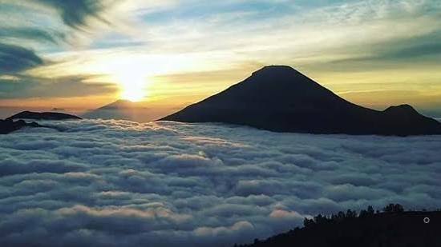

Cuma 3 Jam dari Jakarta, Negeri Atas Awan Gunung Luhur Tawarkan Keindahan Alam yang Luar Biasa!
Wisata | 10 Oktober 2019 | 15:00 WIB
Alam Indonesia memang nggak pernah berhenti menawarkan potensi-potensi wisata baru. Ada destinasi yang memang dirancang untuk tujuan wisata, ada pula yang ditemukan secara nggak sengaja dan menjadi hits sebagai sebuah destinasi wisata. Saking banyaknya potensi pariwisata di negara ini, selalu saja ada destinasi yang seolah baru saja ‘ditemukan’ padahal sudah ada sejak dulu.
Contohnya adalah Negeri Atas Awan Gunung Luhur yang belakangan mendadak viral dan hits di sosial media, karena pesona panorama permadani awan dari atas gunung mampu menghadirkan perasaan yang berbeda. Apalagi lokasi destinasi ini cukup mudah dijangkau oleh masyarakat luar Banten, khususnya daerah Jakarta yang ingin melepas lelah dan menyegarkan pikiran. Cuma butuh waktu tiga jam dari Jakarta, panorama indah sudah bisa disaksikan di depan mata.
Meskipun disebut gunung, ketinggian Gunung Luhur yang berada di Desa Citorek Kidul, Kecamatan Cibeber, Kabupaten Lebak ini hanyalah 901 Mdpl. Oleh karena itu, akses ke atas gunung cukup mudah bahkan kendaraan roda dua dan roda empat bisa langsung naik ke atas gunung.
Uniknya, keindahan panorama Gunung Luhur yang kini ramai diminati wisatawan, ditemukan secara nggak sengaja oleh para pekerja yang sedang melakukan perbaikan jalan provinsi Lebak Utara dan Selatan pada September 2018 lalu. Beberapa warga kemudian mengabadikan pesona alam tersebut dan membagikannya ke sosial media hingga kini viral dan dikenal dengan sebutan Negeri Atas Awan Gunung Luhur.
Pesona keindahan selimut awan Gunung Luhur boleh disandingkan dengan keindahan samudera awan di Gunung Bromo atau Dieng. Dari ketinggian Gunung Luhur, sejauh mata memandang kamu akan menyaksikan hamparan awan yang berujung di Gunung Jakasampurna sekitar 15 kilometer dari Gunung Luhur.
Hanya saja, hamparan keindahan tersebut nggak datang setiap saat. Jika kamu mau berkunjung, waktu terbaik untuk melihat awan dimulai pukul 05.30 WIB hingga pukul 08.00 WIB, kecuali saat hujan turun awan nggak akan muncul karena tertutup kabut.
Nah, untuk menikmati panorama Negeri Atas Awan yang lebih maksimal, kamu bisa lo, menginap di Negeri Atas Awan Gunung Luhur. Warga setempat saat ini sudah menyediakan penginapan semi permanen yang bisa disewa dengan harga mulai dari Rp150 ribu. Atau jika ingin pengalaman yang lebih seru, kamu bisa juga menyewa tenda siap pakai dengan tarif Rp80 ribu. Fasilitas seperti toilet, mushola dan warung juga sudah tersedia untuk menunjang kenyamanan pengunjung.
Kamu nggak usah ragu untuk menjajal perjalanan ke Gunung Luhur karena akses jalan ke sana sudah mulus dan masih akan terus diperbaiki. Kamu bisa menggunakan kendaraan pribadi atau kendaraan umum dengan tujuan Rangkasbitung. Selanjutnya dari Rangkasbitung kamu bisa melalui rute Cipanas – Citorek – hingga Gunung Luhur sekitar 1,5 jam perjalanan. Untuk masuk ke destinasi wisata Negeri Atas Awan Gunung Luhur, tiap pengunjung hanya dikenakan tiket masuk sebesar Rp5000 ribu.
Nah, untuk kamu yang di Banten atau di sekitaran Jakarta yang masih bingung mau vakansi sekejap ke mana, mungkin Negeri Atas Awan Gunung Luhur bisa jadi pilihan untuk menghilangkan kepenatan. Nggak perlu jauh-jauh ke Bromo atau Dieng lagi untuk menikmati hamparan awan nan indah.